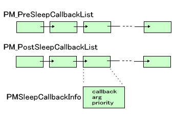

To conserve power, the TWL system can enter sleep mode, separate from the normal (active) mode. Normally, games are created to enter sleep mode when the cover is closed and to recover from sleep mode when the cover is opened. This is not a hardware feature. The application detects that the cover was closed and calls a function to put the system to sleep. This document describes sleep-related functions.
Call the PM_GoSleepMode function to enter sleep mode.
You can specify the following causes for recovery from sleep mode with this command. You can specify several of these items by taking the logical OR of their values. See the PM_GoSleepMode function for more information.
| Platform | Value | Cause of recovery |
|---|---|---|
|
|
PM_TRIGGER_KEY |
A key interrupt |
|
|
PM_TRIGGER_RTC_ALARM |
An RTC alarm interrupt |
|
|
PM_TRIGGER_COVER_OPEN |
Opening the cover |
|
|
PM_TRIGGER_CARD |
A card interrupt or Game Card removal |
|
|
PM_TRIGGER_CARTRIDGE (Note 1) |
A Game Pak interrupt or remove the Game Pak |
 |
PM_TRIGGER_SDIO |
SDIO interrupt |
Note 1: Waking from sleep upon removal of a Game Pak is prohibited by the programming guidelines.
The sleep callback is defined as follows:
typedef void (*PMGenCallback) (void *);
It is a void function that takes a single void* argument.
The callback invoked immediately after entering sleep mode and the callback invoked immediately after recovering from sleep mode are each stored internally in a list. These are called the pre-sleep and post-sleep callbacks.

Callbacks have configurable priority levels. Applications can use priorities ranging from -255 (PM_CALLBACK_PRIORITY_MIN) to 255 (PM_CALLBACK_PRIORITY_MAX). The system (such as the SDK library and middleware) can use priorities ranging from -65,535 (PM_CALLBACK_PRIORITY_SYSMIN) to 65,535 (PM_CALLBACK_PRIORITY_SYSMAX). These priorities are used only to determine the order of the callback list. Items having smaller values are placed closer to the start of the list.
Use the PM_SetSleepCallbackInfo function to configure a callback function and its arguments in a callback information structure, and then register that structure to the list.
It can be registered in one of three ways.
PM_PrependPreSleepCallback and PM_PrependPostSleepCallback functions.PM_AppendPreSleepCallback and PM_AppendPostSleepCallback functions.PM_InsertPreSleepCallback and PM_InsertPostSleepCallback functions.These specifications are the same as the exit callback, so see Exit Callback Registration in Overview (Hardware Reset and Shutdown).
The configured callbacks can be removed using the PM_DeletePreSleepCallback and PM_DeletePostSleepCallback functions.
The PM_DumpSleepCallback function is used in debugging to display the list of callbacks. It will not do anything in FINALROM builds.
It is difficult to perform the same shutdown processing (make the same guarantees) in sleep mode as in active mode because the overall system state is different. Necessary processing must therefore be done in advance when entering sleep mode, rather than during sleep mode.
Consequently, a sudden power disruption during sleep mode does not have any ill effects on the TWL system. The resulting behavior is the same as if the Power Button was pressed in active mode.
Sleep callbacks registered by the SDK run the processes described below.
Pre-sleep callbacks are as follows.
SNDEX_SetIgnoreHWVolume function.
Post-sleep callbacks are as follows.
2009/04/13 Changed "the Power Button or Reset Button" to "the Power Button."
2009/02/03 Added a description of SNDEX processing in registered exit callbacks.
2008/09/13 Initial version.
CONFIDENTIAL